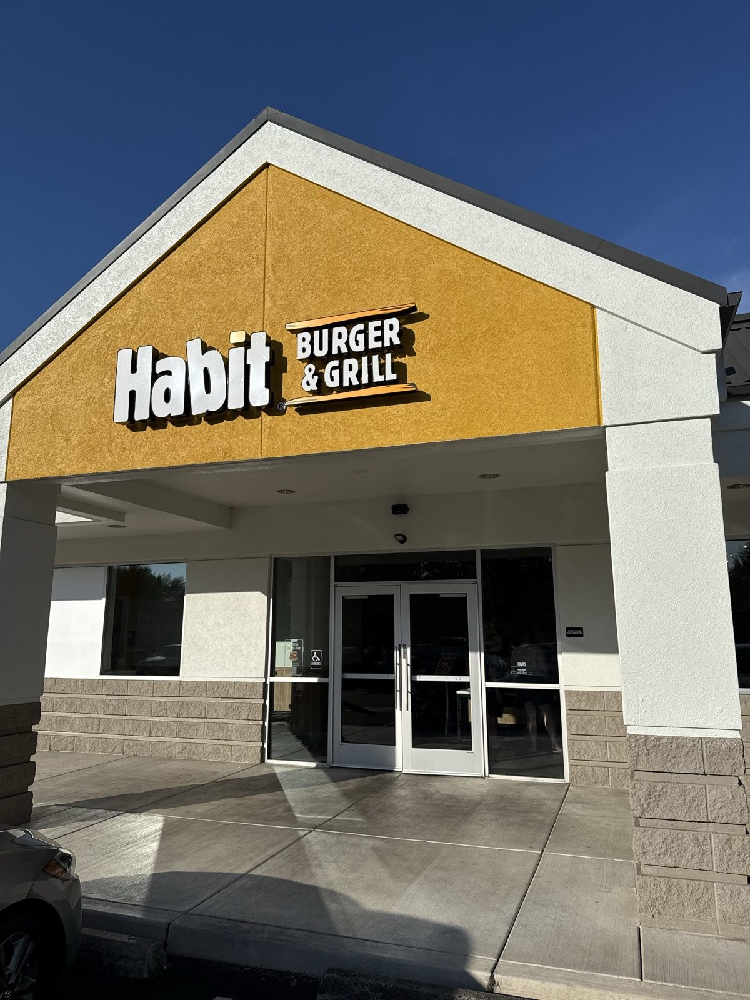
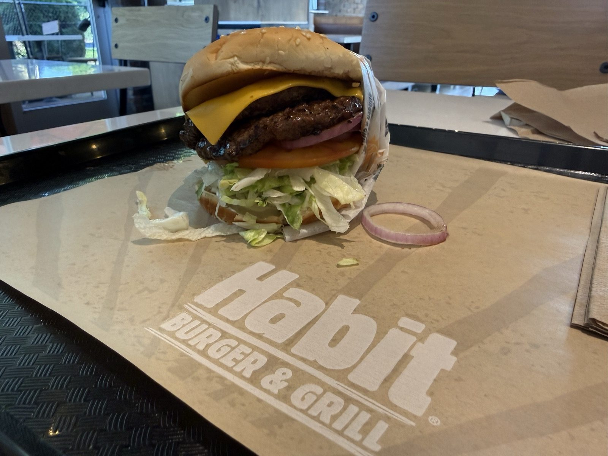
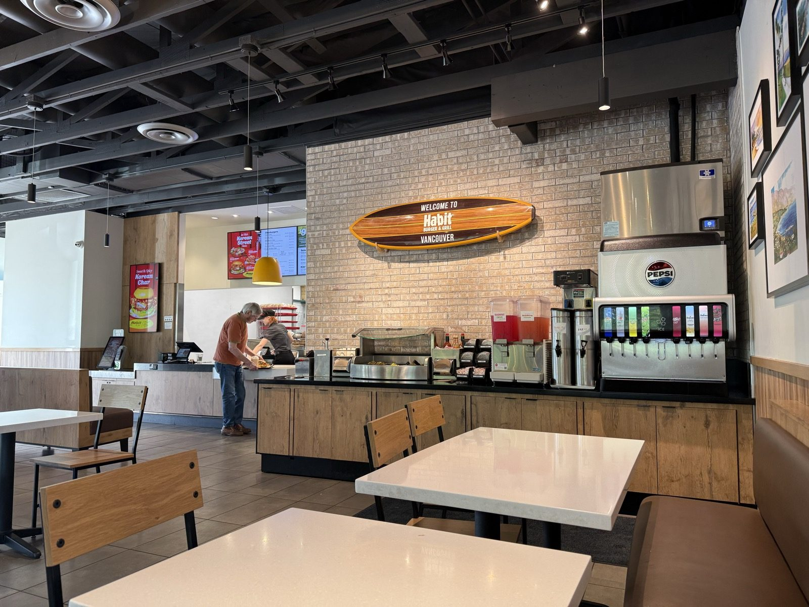
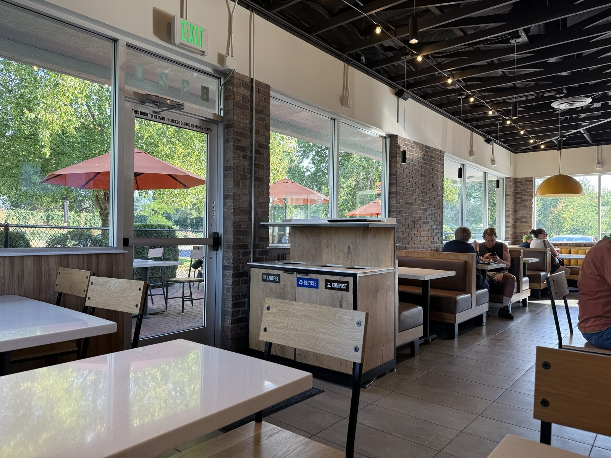

The Time It Beat In-N-Out, at Habit

Half past six on a Monday evening at Habit Burger & Grill on NE Vancouver Plaza Drive, in Vancouver, Washington, and the burger on the tray in front of me didn't cost anything. A Double Char with cheese — two chargrilled patties, cheddar half-melted over the top, tomato and shredded lettuce underneath, a ring of red onion pulled out and set aside — had landed in the Habit app a week earlier as a birthday gift, no purchase required, redeemable any day within the week either side of the actual date. I thought that was a genuinely sweet gesture from what I kept calling, at the table, the Habit Burger and Grill Corporation, and it's the reason I ended up thinking harder about this particular chain than I'd planned to on a Monday night.

Is Habit Burger better than In-N-Out?
I've already written the case for In-N-Out in this notebook, so I don't say this lightly: the Double Char is slightly yummier than In-N-Out's Double-Double. Not by a landslide, and not because In-N-Out did anything wrong — the char on Habit's patties just carries a little more of that open-flame flavor than a flat-top can give you, and it's enough to notice in the first bite. Add in what Habit does with a basket of onion rings, which I'll get to, and this is the rare case where I'll say the second burger I discovered is, on balance, the better one. Both are still fast food. That ceiling matters, and it's the whole reason this gets four and a half stars instead of five.
The onion rings are the actual argument
Here's the claim, stated the way I'd say it out loud: Habit's onion rings, dipped in their spicy ranch, are the best onion rings I've had anywhere — better than the Double-Double, better than anything In-N-Out puts on a tray, and the specific reason this place edges out a chain I've loved my whole life. I didn't get a photo of the rings themselves this trip, which bothers me more than it probably should, but the combination is what I keep thinking about: a batter with real seasoning built into it rather than sitting on top, still audibly crisp, next to a ranch that's been kicked up with enough heat to cut the fry oil without turning into a hot sauce. Most fast-food onion rings are a delivery vehicle for grease. These are a reason to order the side instead of fries.

Since 1969, quietly
The surfboard bolted above the counter, reading Welcome to Habit Burger & Grill Vancouver, is a small nod to a history most people ordering a burger in a Washington strip mall have no reason to know. The chain started on November 15, 1969, in Goleta, California — just up the coast from Santa Barbara, genuine surf country — as a family stand called The Hamburger Habit. Brent and Bruce Reichard, brothers who'd both worked there as teenagers, bought the original location in 1980 and built it out from one store to seventeen across Southern California over the next couple of decades, all of it still under the shortened name they gave it: The Habit Burger Grill.
The growth after that came fast. The private equity firm KarpReilly took majority ownership in 2007 and pushed the chain into franchising; by 2014 there were 109 locations and sales had jumped 40 percent in a single year. The company went public that November. Yum! Brands — the parent of KFC and Taco Bell — bought the whole thing in 2020 for $375 million, and the Reichard brothers sold off their last remaining Santa Barbara County stores the following year, closing out the family's fifty-some years in the business. In August 2024 the chain dropped the "The" and became, simply, Habit Burger & Grill — the name on the sign in the photo above.
The detail that actually matters for this entry happened in the middle of all that expansion. In 2014, Consumer Reports surveyed readers on 53,745 burger meals across 65 chains, asking a simple question — how delicious, one to ten — and Habit's Charburger came out on top at 8.1, ahead of In-N-Out in second place and miles ahead of McDonald's, which finished dead last. A decade later, in 2024, USA Today's 10Best Readers' Choice Awards named the Double Char — the exact burger sitting on the wrapper above — the best fast-food burger in the country. So the claim at the top of this entry isn't just my birthday burger talking. Somebody's already measured it, twice, a decade apart, and gotten roughly my answer both times.

Welcome to Habit Burger & Grill Vancouver — surfboard, on a brick wall, several hundred miles from the nearest surfable coastline.
The practical bit
Habit Burger & Grill — 8320 NE Vancouver Plaza Drive, Vancouver, Washington 98662. This was the first of what are now two Habit locations in Vancouver, opening in 2025 ahead of a second store further north near Salmon Creek. 📍 Get directions
Hours: 10:30 AM – 10:00 PM, daily. Phone: (360) 251-0131.
What it costs: per Habit's published menu, a Double Char runs $6.99 on its own or about $12.99 as a combo with fries and a drink — a step above In-N-Out's board, though the char-grilled flavor and the onion rings are most of why I don't mind paying it.
The birthday deal: create an account in the Habit app and add your birthday, and a free Double Char with cheese lands in your rewards a week ahead of the date, good through a week after — no purchase required.